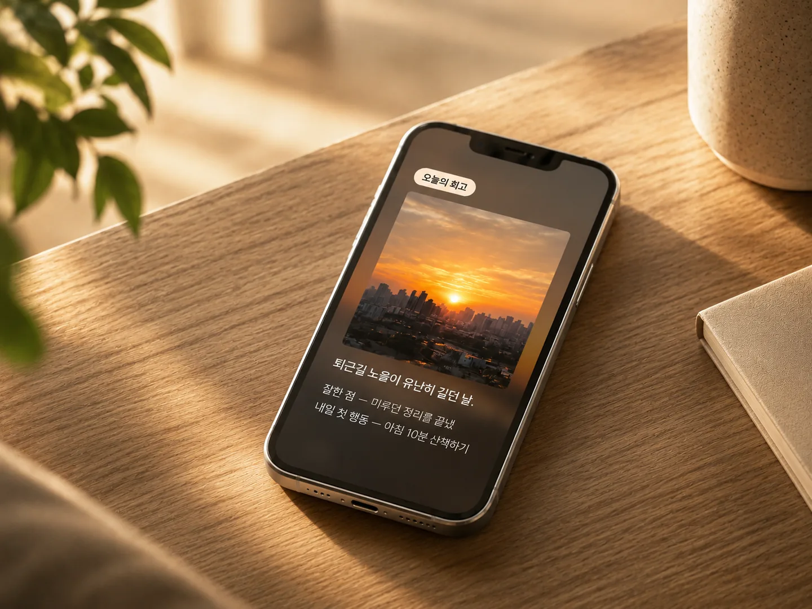
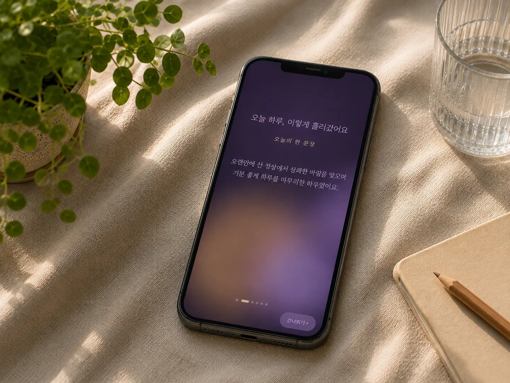
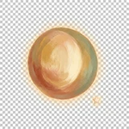
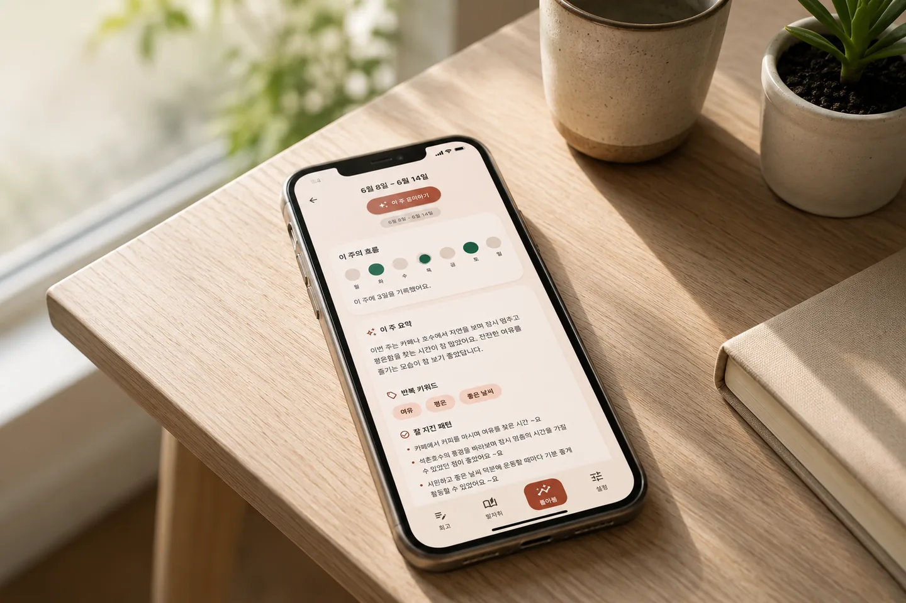

음미하기 연출
잔잔한 배경음과 함께 오늘의 회고를 천천히 다시 봅니다.
사진 한 장, 음성 30초로 끝내는 3분 회고.
AI 정리부터 음성 나레이션까지 전부 휴대폰 안에서.

오늘을 기억나게 하는 한 장이면 됩니다.
타이핑 대신 말로 남기세요. 기기 안에서 글로 바뀝니다.
오늘의 핵심, 잘한 점, 내일 첫 행동을 정리해 드립니다.

32문항으로 알아보는 나의 회고 성향 — 16가지 유형 중 나는 어떤 사람일까요?
결과는 나레이션과 함께 한 편의 연출로 천천히 확인합니다.
첫 기록부터 함께한 365일까지, 걸음마다 뱃지가 남습니다.

…22종잔잔한 배경음과 함께 오늘의 회고를 천천히 다시 봅니다.
한 주의 반복 키워드와 다음 주의 초점을 정리합니다.

회고 카드를 따뜻한 목소리로 읽어 줍니다. 이것도 기기 안에서.
회고 전체를 한 파일로 만들어 직접 보관할 수 있습니다.
회고 끝에 AI가 한 걸음 더 물어봅니다. 대답은 그대로 기록이 됩니다.
감정·기간·키워드로 그날의 기억을 다시 찾습니다.
오늘의 회고를 카드 이미지로 만들어 나눕니다. 만드는 것도 기기 안에서.
기기 생체인증으로 나만 볼 수 있게 지킵니다.
AI 회고 생성, 음성 인식, 음성 나레이션은 모두 휴대폰에서 동작하는 온디바이스 모델로 처리됩니다. 회고·사진·음성은 외부 서버로 전송되지 않으며, 네트워크는 AI 모델 파일을 내려받는 용도로만 사용됩니다. 앱 잠금(생체인증)을 켜면 기기 안에서도 나만 볼 수 있습니다.
개인정보처리방침에서 자세히 보기나를 돌아보는 가장 사적인 방법.